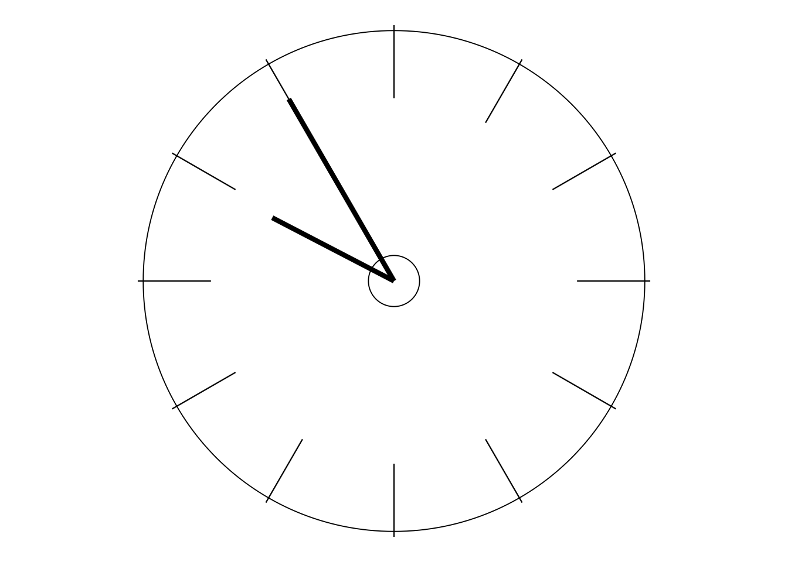

‘STATISTICS? OH NO!’
Statistics?
Now, depending on your background, one feature of the previous section may have already started making you feel a little queasy. And that is the repeated references to things statistical. You know that Dr Deming described at least some of his work as “statistical studies”. You know that one of his first recommendations to Bill Conway was that he hire an experienced statistician. You know that the “all-important” control chart is a statistical tool. And, perhaps worst of all, you know that I used to teach Mathematical Statistics!
I can heap yet more coals onto the fire by quoting the way that Dr Deming was introduced midway through If Japan Can, Why Can’t We?. These are the words of the programme’s narrator, Lloyd Dobyns:
We have said several times that much of what the Japanese are doing [is what] we taught them to do. And the man who did most of the teaching is W Edwards Deming, statistical analyst, for whom Japan’s highest industrial award for quality and productivity is named. But in this country he is not widely recognised. That may be changing.
“W Edwards Deming, statistical analyst”? Well, if so, be sure that that was but a single string on a many- stringed bow!
As you may already have noticed, I am using British spellings and punctuation conventions even when quoting Americans. Since, obviously, I quote Americans a great deal in this course, I thought it appeared rather pedantic and messy to keep switching between the two styles. For simplicity I therefore decided to use British conventions throughout. I hope this causes no offence or difficulty.
But no wonder then that, if you do not have any background in Statistics, you may be beginning to feel a trifle uneasy. But even if you have suffered some introductory Statistics course either recently or long ago, you might also be feeling uneasy. For I am well aware that the subject of Statistics is not a favourite area of study for many people! And yes, I know all the old sayings such as “There are lies, damned lies, and statistics” and “You can prove anything with statistics”, and I am aware of (indeed, have read and enjoyed) books such as Darrell Huff’s best-seller: How to Lie with Statistics.
However, all we see in the main material of this course that is related to the subject of Statistics is what I like to summarise in just two words: “understanding variation”. In fact, those two words form the short title of the best introductory book on the topic that I know of. The full title of that book is also instructive: Understanding Variation—the Key to Managing Chaos (written by my good friend Dr D J Wheeler). But no, I’m not expecting you to become expert in the subject-area known as “Chaos Theory”! In a nutshell, understanding variation is to do with being able to justifiably describe the behaviour over time of processes or systems of any kind by words such as “stable” and “predictable” or, on the other hand, “unstable” and “unpredictable”. Those words indicate pretty well the difference between the two states, and I think you will easily understand that, if your work involves what we are referring to as “processes” or “systems” (and most work certainly does) then that difference is pretty darned important! And the control chart is the invaluable tool which best enables us to discriminate between those two states. The “official” terms for the two states that you will find both Drs Shewhart and Deming using are respectively “in statistical control” and “out of statistical control” although, in the former case, Deming also often refers to a “stable system”.
The point I want to emphasise here is that what I am expressing as “understanding variation” is different from the material usually taught in introductory (and, indeed, later) conventional Statistics courses. If you have ever had an introductory course in Statistics then I doubt very much whether you ever heard of either Walter Shewhart or the control chart during that course. Indeed, it is sadly true that some people who have university degrees in Statistics haven’t heard of them either! In this course (apart from the Optional Extras section which is included purely for the benefit of people who might be interested in more technical matters) we shall not be involved with such things as probabilities or the normal distribution or the binomial distribution or any other probability distribution, nor with tests of significance, p-values or confidence intervals, nor with techniques to do with regression and correlation, etc, etc. We do not need them. The large majority of what is normally taught in traditional Statistics courses is irrelevant for “understanding variation” in the all-important sense in which we use the term in this course. So, if you haven’t heard of the list of things I’ve just detailed, you actually have the advantage: for then you don’t have any unlearning to do.
That comment might sound flippant. It isn’t. Over the nearly 20 years of my seminars on Dr Deming’s teaching I rarely suffered from having any “difficult” delegates. The few that I had could be divided into two types. One type were very senior managers, the other type were those with some qualification in Statistics. Of course, I don’t mean all senior managers or all statisticians: I mean those who came to the seminar with the impression that they already knew all they needed to know—so really there wasn’t much point in their attending! Regarding statisticians, note well my first quotation below.
But, with my background as a university lecturer in Mathematical Statistics, I didn’t realise any of the above when travelling to London in June 1985 for that first four-day seminar with Dr Deming. You might be amused by a paragraph I wrote on page 76 of the second edition of my little book of Statistics Tables (published in 2011):
At that first seminar, I was looking forward to discovering how all my knowledge of Mathematical Statistics fitted into Dr Deming’s management teaching. It didn’t! I believe there was not a single mention of a probability, a probability distribution or a hypothesis test during the whole four days. Yet Deming was a statistician?! (And indeed a fine mathematician as well.) Further, the only statistical technique he used during the whole four days was the control chart … I had new and very different learning to face.
Incidentally, the full title of Statistics Tables is Statistics Tables for Mathematicians, Engineers, Economists and the Behavioural and Management Sciences which, for obvious reasons, I shall henceforth abbreviate by ST! And, while I’m about it, I may as well also quote a couple of paragraphs from the “Welcome to the Second Edition” on page 2 of my Elementary Statistics Tables (to be similarly abbreviated by EST), which was also published in 2011:
So, what’s new? The majority of the added material focuses on a remarkable statistical technique which, to all intents and purposes, was unknown at the time of the original edition. At this time of writing it is still largely unknown, especially in academia—it hasn’t yet reached most of the introductory Statistics books and courses. But, during the second half of my career (mostly spent outside academia, unlike the first half), I found the process behaviour chart [see the small print below] unbelievably useful due to its (I believe) unique combination of simplicity and effectiveness. Of course, you won’t find it on examination papers. But if you want to analyse and understand data out there in the ‘real world’, I believe you’ll find it invaluable. Many delegates, sent by their boss, would arrive at my public and in-house seminars in fear and trepidation: they’d never been able to ‘do Statistics’—they hated the subject! By the end of the day they could understand the process behaviour chart, and they could use it, and they could communicate with it. So here it is in this new edition of Elementary Statistics Tables—though you don’t even need any tables in order to use it! Don’t scorn its simplicity—try it out on some real process data, including some that you have not previously attempted to interpret.
A couple of points of clarification will be useful here. Firstly, the original editions of these little books of Statistics Tables were published as long ago as 1978 and 1981 respectively—long before I met Dr Deming or learned anything significant about his work. Not surprisingly therefore, those original editions contained little on control charts because, back then, I honestly had no idea of how important control charts are in practice. Second, I’ll remind you of something I mentioned on page 7 of the Welcome section: “process behaviour chart” is an alternative term for “control chart” which nowadays is preferred by many people who use the chart for the purposes relevant to Dr Deming’s teaching. Indeed, I also have generally used it in recent years because, compared with usual interpretations of the word “control”, it describes much better why the chart is so useful. The reason I’m calling it a control chart in this course is that I shall be including many direct quotations from both Drs Deming and Shewhart. Naturally, they used the traditional language, and so, similarly to something that I said on page 5, it didn’t seem sensible here to keep flitting between alternative terms for the same thing.
The two paradoxes
So, as implied by that quote from EST and earlier, the truth is that the statistical tool which had pride of place in Dr Deming’s teaching is rarely to be seen in introductory courses on Statistics—nor, for that matter, in more advanced Statistics courses. I can go further: the bulk of material which is featured in such courses does not get mentioned in Dr Deming’s teaching—except, in some cases, for him to point out that it is unnecessary and misleading! Quite some paradox. And it’s not the only one.
How you react to that first paradox is likely to largely depend on whether or not you have any background in what I’m calling “conventional” or “traditional” Statistics. If you haven’t then I imagine you will welcome the paradox with open arms! But otherwise you may have more of a sense of puzzlement rather than relief. If that is the case then I can sympathise—because, in my own early days of learning about Dr Deming’s work, I was similarly mystified about this. So, to try to help, I have written some additional material just for you which I’ll point you toward at the end of this section. But for now, as implied above, there is another paradox to introduce, and I will deal with this second one right here in the main text.
Let me emphasise even further Deming’s concentration on the importance of control charts. He was clear that it is generally desirable for everyone in an organisation to be able to use control charts and to communicate with them. And, even if that turns out not to be sensible or practical, he was also clear that, the more senior someone is in their organisation, the more essential such ability becomes. As far as he was concerned, the most important control charts should be right there on the Chief Executive’s desk.
Yet in his seminars Deming didn’t teach the details of how to construct control charts! Paradox No. 2.
Yes, he would usually draw up a chart once the results were obtained in his famous Red Beads Experiment which we shall describe and work with tomorrow on Day 2 of our course. But how? He would just write down a simple formula, insert some numbers that had been recorded during the experiment, and carry out a little arithmetic. But there was nothing about where the simple formula came from nor the fact that, with the large majority of processes, that same formula wouldn’t even be appropriate!
So let’s shed some light on this second paradox. This is a quote from my brief discussion on the sixth of Deming’s famous 14 Points for Management: “Institute training” that you will see on Day 4 page 26 [WB 66]:
In Deming’s terminology, the purpose of ‘training’ is the acquisition of specific skills for specific tasks. Training is thus narrowly defined and finite in scale and scope. In contrast, as we shall see in Point 13, ‘education’ is the opposite: very non-specific, very broadly defined, and essentially infinite in scale and scope.
Thus, in Deming’s terms, teaching and learning details about how to construct control charts is training. Teaching and learning how to interpret the charts once they are drawn, and then how to proceed intelligently on the basis of such interpretation, is education. His seminars were most definitely education; what he regarded as the simpler matter of training could be left to someone else. A couple of sentences from his diary entry for Monday 10 July 1950, regarding some lectures to the Japan Medical Association, will con- firm the point:
Professor Masuyama and assistants will teach the statistical control of quality in the afternoon. I shall teach during the forenoon the theory of a system, and cooperation.
So he regarded getting into some training, even on something as vital as the construction of control charts, would be inappropriate during his teaching—it would interrupt the flow of what was really important: education. But in one respect his approach was dangerous. “Professor Masuyama and assistants” might have known what they were talking about but, sadly, many trainers who try to teach people about control charts do not. Please be warned that much of what is currently taught and practised concerning control charts is not wholly consistent with Shewhart’s teaching. For example, control charts are often regarded as primarily relevant to manufacturing processes and requiring data that satisfy certain statistical conditions, in particular that they are “normally distributed”. As previously, don’t worry if you do not know what that means, for the fact is that Shewhart’s teaching was not dependent on such restrictions (though some statisticians seem to wish—or even believe—that it was). Quite the opposite. Indeed, Dr Shewhart was speci- fic about the need to have statistical techniques which really work in practical situations rather than just depend on what he referred to as “a fine ancestry of highbrow statistical theorems”! (This quotation comes from page 18 of Shewhart’s 1931 book which, early this afternoon, you will see described in glowing terms by Dr Deming.) A good way of expressing this is that Shewhart saw the need for statistical techniques that are suitable for our data rather than the need for data that are suitable for our statistical techniques. Think about it! Makes good sense to me. And that is precisely what Dr Shewhart produced.

Control charts in this course
So what does all this imply about my approach to control charts in this course? As in Dr Deming’s seminars, you will not have to construct any control charts if you’d prefer not to. However, you will see some control charts on Days 2 and 3, and so I shall include some relevant description there. But there is already plenty for you to do on both of those days, and so to insist that you also engage in any substantial training on control charts would be too much of a good thing! On the other hand, the educational aspect that I’ve already mentioned is absolutely vital. Repeating what I said above, that is to learn how to interpret the charts once they are drawn, and then how to proceed intelligently on the basis of that interpretation.
On the other hand, you may of course wish to learn a little more or even a lot more about control charts. In that case I’ll mention three possibilities which will enable you to go “beyond the basics”, in addition to Don Wheeler’s book mentioned on page 5. The first is a small number of “Technical Aids” that appear in the material for Days 2 and 3. These will enable you to construct the control charts yourself rather than just use charts which other people have drawn up. The second possibility is an article which is freely available on the internet. Some time ago I was encouraged by a freelance writer named Mitch Beedie to write an introductory article on control charts. Mitch had found control charts extremely useful in his main areas of interest: environmental studies and energy conservation. But he said that he had found introductory literature on the topic quite difficult to understand until he had come across some of mine! He titled the article “Understanding Variation” and added the subtitle “The Springboard for Process Improvement”. I shall therefore shall refer to it in this course material as the “Springboard” article. You can reach it on the UK Deming Alliance’s website via the following link:
And lastly, if you are really keen to have a comprehensive introduction to control charts—going well beyond what is necessary for this course—there is the fairly substantial section of “Optional Extras” described at the top of page 8 in the “Welcome” section. This optional material contains a variety of topics, all more or less connected with control charting. But I must emphasise that both this extra material and the Springboard article really are “optional extras”—take them or leave them as you prefer. However, if you decide to take them, please don’t count them as being within the recommended 12-day timeframe!
So how can I guide you through these various possibilities? I’m going to ask you to choose which of four “Stats-levels” you feel is most suitable for you. Stats-level 0 refers to those who would prefer to avoid as much as possible of anything like even simple arithmetic or drawing very basic graphs. Stats-level 1 is for those who do not mind simple arithmetic and drawing basic graphs but who are not keen to go any further than that. Stats-level 2 applies to those who would like to delve into something about the ideas underlying the construction of control charts, but without getting in very deep. And Stats-level 3 is for those who are already looking forward to tackling my Optional Extras section!
So which Stats-level are you?
After you’ve answered that question, here’s my guidance for you:
Stats-level 0: Don’t even bother with the few Technical Aids on Days 2 and 3. But you will be asked to look at some pictures!
Stats-level 1: Work with the Technical Aids when they come, and have a go at constructing some of the charts yourself.
Stats-level 2: As Stats-level 1 but also browse through the Springboard article when you feel like it and take time to go through it more thoroughly after Day 3 in order to consolidate your learning.
Stats-level 3: As Stats-level 2 but take a look at what’s available in the Optional Extras section whenever you like (out of hours!). Remember that this extra material is only there for those who might be genuinely interested in some of it. Ignoring all of it will not harm your understanding of the rest of this course, although some of it might help to increase your confidence about dealing with control charts when the time comes that you need to. A sensible plan might therefore be to postpone the Optional Extras section until the main 12-day course is completed—unless you just can’t resist looking at some of it earlier than that!
Having worked with some thousands of delegates at my seminars over the years, I am particularly conscious of the need to treat those on Stats-level 0 very gently! So there might be a case for going even further out in that direction and introducing a Stats-level 00! If you think that might apply to you then I should also raise the possibility of you even skipping some of the main text in the morning of Day 3 (but nothing else!)—I’ll guide you when you get there. Now, there are pros and cons in thinking of doing that, so please bear with me while I discuss them.
As regards how knowledgeable somebody may become on control charts, it seems to me that there are three stages. The first stage is the only absolutely vital one for this course. This is where you get to understand why control charts are important and what it is that they are able to communicate to their users. Notice the “why” there rather than “how”. Getting as far as the “how” is the second stage. The third stage goes even further and really is concerned with a further “why”: why is the “how” what it is?!
So the truth is that the first of the three stages is strictly all you need to know in order to be able to understand Dr Deming’s theory of management, which is primarily what this course is about. A later section of this Overture takes a careful look at words like “theory”, so I won’t expand on that right now except to make one crucial point. This is that, at least in Deming’s case, theory has a definite purpose—it is to guide better practice. So, in Deming’s case, theory should be respected by practical people (possibly unlike some other theories!). I am assuming that you are interested in better practice as well as learning the theory, so this will surely mean that, sooner or later, you will want to move onto the second stage: the “how”.
How can a control chart tell you what you need to know? That’s where you encounter the snag about skipping parts of the main text in the morning of Day 3. For, whereas they may be skipped if you were only interested in theory, you will need to work through them when the time comes that you want to effectively turn some of the theory into practice—the “better practice” that I just mentioned.
On the other hand, the third stage is truly optional as far as this course is concerned. Quite a lot of the “how” is largely common sense, but some of it does depend on more “academic” information, such as a few of the details needed to construct control charts. Faced with the choice, most people are content to go by what the “experts” tell them is the sensible way, especially if there is some mathematics involved in the whys and wherefores. So it is the second stage, the “how”, that is important to the user of control charts—how to interpret what the control chart is telling you—rather than the fine detail of why the control chart is constructed in the way that it is. If you want to watch television, do you really need to know why the television—or even the remote control—works? Most people are content to read the instruction book or, at least, the quick-start guide and do what they say. Some of that probably is common sense—but not all of it. If the television doesn’t work for some reason, do you want to learn enough so that you can figure out why it’s not working? No: you call in the engineer and trust that whoever responds to your call understands such things. That engineer has been educated and trained up to the third stage, whereas it is quite sufficient for you and the large majority to go no further than the second stage.
So, in summary, unless you really want to limit yourself to Stats-level 00, do take at least a quick look at all of the main text (except possibly for the Technical Aids). Even if you do not intend to start working with control charts just yet, it would be a good idea for you to get some preliminary ideas about how to interpret them. Then, when the time comes, you could come back to the practical guidance on interpreting control charts (almost all of which is in the morning of Day 3) and study that more carefully then. However, if you are verging on Stats-level 00, be content to just skim through that material for now: I don’t want you to get so fed up with Day 3 that you feel discouraged and thus never move on to Day 4! I repeat: there won’t be any involvement with control chart calculations etc throughout all the rest of this course after Day 3.
If you are following my timing guidance, the difference between Stats-level 0 (including 00, of course) and the rest creates a small problem: on both Days 2 and 3, those on Stats-level 0 will have less to do than everyone else. So alternative schedules will be provided on just those two days. On both days, the initial Contents page will relate only to Stats-level 0 and will then be followed by a similar but different page for Stats-levels 1–3. During the main text, the little clock icons for Stats-levels 1–3 will be on the right-hand side as you are already seeing today, while the clock icons for Stats-level 0 will be on the left-hand side.
That finishes this section; so now, if you wish, take a little time out to read my discussion in the Appendix on the former of the two paradoxes (which I described on page 7): I hope it will shed some light on the mystery. But, again: that discussion is only intended for those who are puzzled by the paradox. If instead you are simply content (and relieved!) by what the paradox has told you then please don’t bother with this extra reading—just carry straight on. Also, the discussion on the first paradox is likely to be of greatest interest to those who are familiar with the basics of “traditional” Statistics—for it includes one of Deming’s most powerful expressions of the irrelevance of several of those basics when studying process data.
So if you would now like to read about the first paradox on Appendix pages 2–6 and are also following my guidance on timings at all closely then please “stop the clock” whilst you are reading those pages.